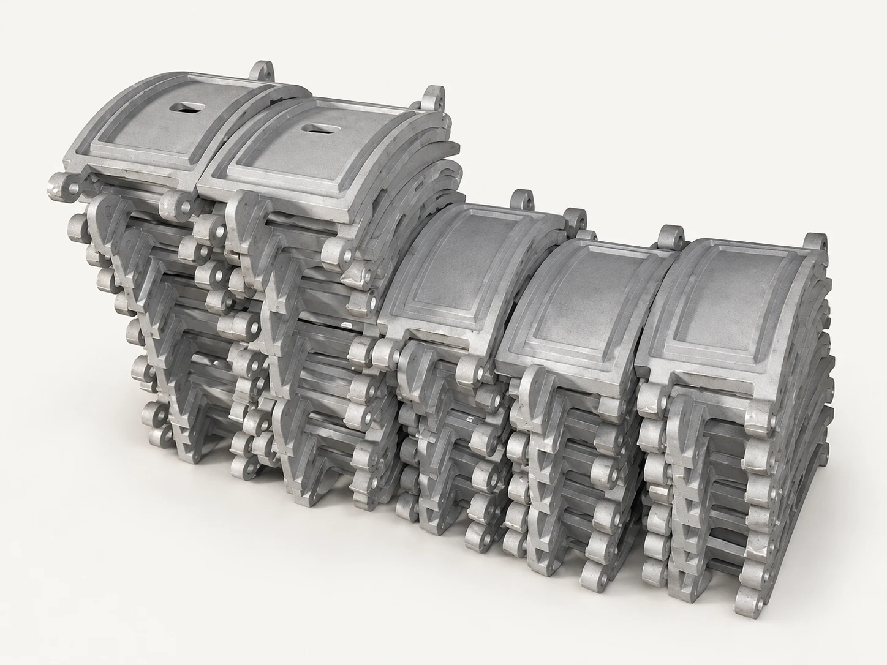
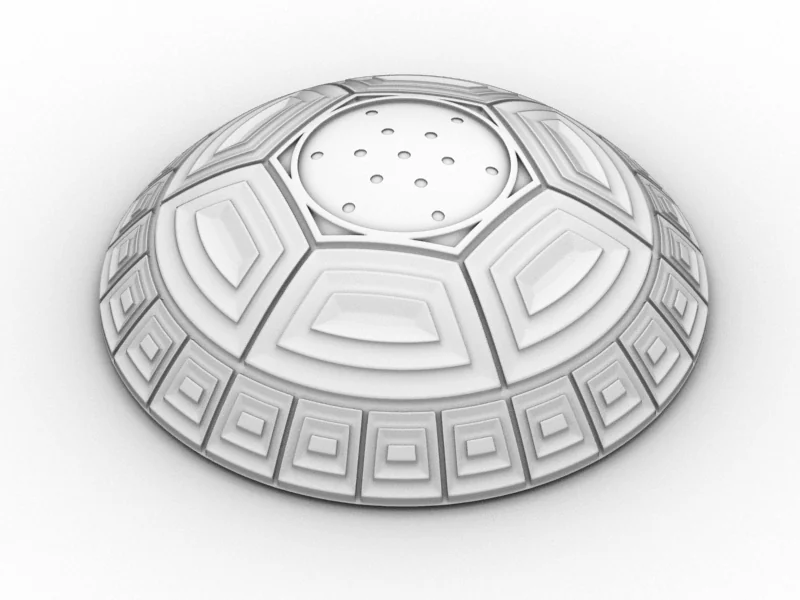

По вашей документацииКаталог
Литьё деталей и модельная оснастка на заказ
Промышленные и художественные отливки по чертежам, эскизам и образцам. Работаем с чугуном, сталью и цветными сплавами. Технологию и возможность изготовления подтверждаем по конкретному заданию.
2 позиций

По эскизуМодельная оснастка
Оснастка и художественное литьё
От формы до выразительной детали.
Стоимость по запросуПодробнее
По вашему запросу ничего не найдено
Попробуйте другое название или опишите нам свою задачу.